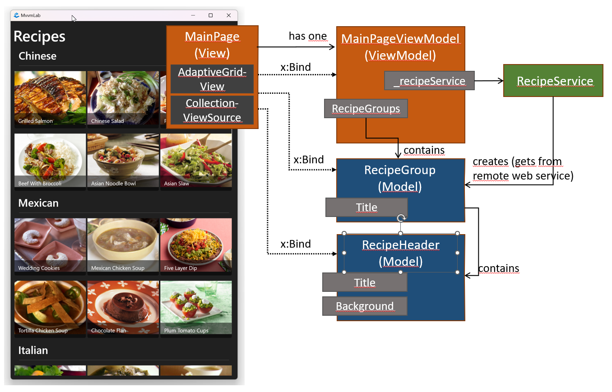

5. MVVM¶
A gyakorlat célja¶
A labor során egy recept böngésző alkalmazást fogunk készíteni, amelyben alkalmazzuk az MVVM tervezési mintát.
Előfeltételek¶
A labor elvégzéséhez szükséges eszközök:
- Windows 10 vagy Windows 11 operációs rendszer (Linux és macOS nem alkalmas)
- Visual Studio 2022
- Windows Desktop Development Workload
Kiinduló projekt¶
Klónozzuk le a kiinduló projektet az alábbi paranccsal:
git clone https://github.com/bmeviauab00/lab-mvvm-kiindulo
A kész megoldás letöltése
 Lényeges, hogy a labor során a laborvezetőt követve kell dolgozni, tilos (és értelmetlen) a kész megoldás letöltése. Ugyanakkor az utólagos önálló gyakorlás során hasznos lehet a kész megoldás áttekintése, így ezt elérhetővé tesszük.
Lényeges, hogy a labor során a laborvezetőt követve kell dolgozni, tilos (és értelmetlen) a kész megoldás letöltése. Ugyanakkor az utólagos önálló gyakorlás során hasznos lehet a kész megoldás áttekintése, így ezt elérhetővé tesszük.
A megoldás GitHubon érhető el a megoldas ágon. A legegyszerűbb mód a letöltésére, ha parancssorból a git clone utasítással leklónozzuk a gépünkre a megoldas ágat:
git clone https://github.com/bmeviauab00/lab-mvvm-kiindulo -b megoldas
Az MVVM mintáról¶
Az MVVM (Model-View-ViewModel) egy architekturális tervezési minta, amelyet a XAML alkalmazások fejlesztése során használhatunk, de gyakran más kliens oldali technológiák esetében is megjelenik. Az MVVM minta célja, hogy a felhasználói felületet és a mögötte lévő logikát szétválassza, és ezzel egy lazább csatolású alkalmazást hozzon létre, ami növeli a tesztelhetőséget, a karbantarthatóságot és az újrafelhasználhatóságot.
Az MVVM minta három (+1) fő részből áll:
- Model: Az alkalmazás üzleti modelljét tartalmazza, amelyet a ViewModel-ek használhatnak az adatok tárolására.
- View: A felhasználói felület leírását tartalmazza, és a tisztán a nézetekhez kapcsolódó logikát (pl.: animációk kezelését).
- ViewModel: A nézet absztrakciója, mely tartalmazza a nézet állapotát és a nézeten végrehajtható műveleteket, nézet függetlenül. A laza csatolást a ViewModel és a nézet között az adatkötés biztosítja.
- Services (szolgáltatások): Az alkalmazás üzleti logikáját tartalmazó osztályok, amelyeket a ViewModel-ek használnak. Ha minden üzleti logika a ViewModel-ekben lenne, azok túl bonyolultak és átláthatatlanok lennének. Ez nem az MVVM minta része, de itt említjük meg, mert mi is így fogjuk használni az alkalmazás architektúráját.
Új:
- Model: Domainspecifikus adatokat fog össze, melyet a ViewModel-ek használhatnak az adatok tárolására. Pl. Recipe/Product/Order osztály, egy recept/termék/megrendelés adatait fogja össze.
- View: A felhasználói felület leírását tartalmazza, (és a tisztán a nézetekhez kapcsolódó logikát, pl. animációk kezelését). Tipikusan Window, Page, UserControl leszármazott osztály, XAML-beli deklaratív leírással, a code-behind sokszor üres (mert a logika a ViewModel-ben van).
- ViewModel: A nézethez tartozó logika van benne: tartalmazza a nézet állapotát és a nézeten végrehajtható műveleteket. Független a nézettől, a laza csatolást a ViewModel és a nézet között adatkötés biztosítja (a nézet vezérlői kötnek a ViewModel tulajdonságaihoz). Unit tesztelhető!
- Services (szolgáltatások): Az alkalmazás üzleti/alkalmazás logikáját tartalmazó osztályok, amelyeket a ViewModel-ek használnak. Ha minden üzleti logika a ViewModel-ekben lenne, azok túl bonyolultak és átláthatatlanok lennének. Ez nem az MVVM minta része, de itt említjük meg, mert mi is így fogjuk felépíteni az alkalmazás architektúráját.
{kind=link}
Mihez készítünk ViewModel osztályokat?
- Az egyes nézetekhez (pl. Window, Page, Dialog, UserControl) mindig készítünk ViewModel osztályt, és belőle egy nézethez egy objektumot hozunk létre. Pl. MainPage-hez MainPageViewModel, DancerDialog-hoz DancerDialogViewModel. Ezt a gyakorlat során is alkalmazzuk.
- Az egyes modell osztályokhoz (pl. Recipe, Product, Dancer stb.) opcionálisan készíthetünk csomagoló ViewModel osztályokat (pl. RecipeViewModel, ProductViewModel, DancerViewModel), ilyeneket a gyakorlat során nem fogunk készíteni. Ez azért van, mert nem a Strict, hanem a Relaxed MVVM mintát követjük (lásd előadás).
0. Feladat - Projekt felépítése¶
Az alkalmazás váza már elő van készítve. Tekintsük át a projekt felépítését.
Az MvvmLab a futtatható alkalmazás projektje, amely WinUI keretrendszert használ a megjelenítési rétegében a már tanult XAML nyelvvel. Az MvvmLab.Core projekt (class library) a teljesen nézet független üzleti logikákat tartalmazza.
Ami számunkra fontos a kiinduló projektben:
App.xaml.cs: Az alkalmazás belépési pontja, amely használja a modern .NET alkalmazásokban alkalmazott Host Builder és Dependency Injection mintákat. A félévnek ez nem az anyaga, de a függőség injektálásról még a labor során lesz szó.Viewsmappa: Az alkalmazás nézeteit tartalmazza, jelenleg aMainPage-etViewModelsmappa: Az alkalmazás ViewModel-jeit tartalmazza, jelenleg aMainPageViewModel-tINagivationService(Servicesmappában): oldalak közötti navigációhoz használt szolgáltatás
MVVM és Boilerplate könyvtárak
MVVM mintát ritkán szoktunk kizárólag a .NET keretrendszerre támaszkodva implementálni. Érdemes használni valamilyen MVVM könyvtárat, amelyek segítségével a kódunk tömörebb, átláthatóbb, és kevesebb boilerplate kódot fog tartalmazni. A könyvtárak közül a legelterjedtebbek a következők:
- MVVM Toolkit: Microsoft által gondozott MVVM könyvtár
- Prism: Régen Microsoft gondozásában állt és nagyon elterjedt volt, de már külső fejlesztők tartják karban és fizetős lett idő közben.
- ReactiveUI: A Reactive Extensions (Rx) könyvtárakat használja a ViewModel állapotának kezelésére, és a nézet és ViewModel közötti adatkötésre. Ez a könyvtár nyújtja a legtöbb szolgáltatást, de a legnehezebben tanulható is.
- Uno.Extensions: MVVM Toolkitre épül, de több olyan szolgáltatást is tartalmaz, amelyek a WinUI keretrendszer hiányosságait pótolják.
A labor során a Microsoft által gondozott MVVM Toolkitet fogjuk használni.
A kiinduló projekt pedig a Windows Template Studio Visual Studio kiegészítő segítségével készült.
1. Feladat - Receptek főoldal¶
A megoldás során "alulról", az adatok felől fogunk építkezni és fokozatosan fogunk eljutni a nézetig. Ugyan a való életben egy top-bottom fejlesztés gyakran hasznosabb, de a labor során az idő rövidsége miatt az alulról építkezés gyorsabb és egyszerűbb, mert így nem kell az adatokat mockolni. Az alábbi ábra a főoldalhoz tartozó fontosabb osztályokat tekinti át.

{kind=link}
Fontosabb elemek:
MainPage: ez a View, egy Page leszármazott, a felület XAML alapú leírása.MainPageViewModel: a főoldalhoz (MainPage) tartozó ViewModel. Egy (generált)RecipeGroupstulajdonságban receptcsoportokat, a receptcsoportokban recepteket tartalmaz. A nézet ezen a receptcsoportok fejlécét, illetve a csoportokban levő receptek fejlécét és képeit jeleníti meg adatkötéssel.RecipeGroupésRecipe: a receptcsoportokat és a recepteket reprezentáló modell osztályok.RecipeService: alkalmazáslogika/adatelérés a receptek kezeléséhez (egy távoli szolgáltatással kommunikál), a ViewModel használja.
1.1 Adatelérési szolgáltatás¶
Kezdjük az adatelérési réteggel, amit most tekinthetünk az MVVM mintában a modell rétegnek is.
Az alkalmazásunk adatait egy webszerverről kérdezi le (ún. REST API-n, HTTP-n keresztül éri el). Az ehhez hasonló kliens-szerver architektúrájú alkalmazások egy kifejezetten gyakori megoldásnak számítanak a modern alkalmazások fejlesztése során. Erről bővebben a következő félévben a Mobil és Webes szoftverek, illetve az Adatvezérelt alkalmazások tárgyakban lesz szó. Most elég annyit tudni, hogy a kliens alkalmazásunk HTTP kéréseket fog küldeni a szervernek, amelyekre a szerver válaszolni fog, mégpedig JSON formátumban szolgáltat adatokat.
{kind=link}
A távoli szolgáltatás a következő címen érhető el: https://bmecookbook2.azurewebsites.net/api. A szolgáltatáshoz pedig tartozik egy OpenApi alapú dokumentáció a https://bmecookbook2.azurewebsites.net/swagger címen. Tanulmányozzuk ezt át, vagy akár próbáljuk ki a végpotokat a Swagger felületén keresztül (ehhez írjuk be az előző "swagger" végződésű URL-t egy böngésző címsorába).
Az első feladathoz a /api/Recipes/Groups végpontot fogjuk használni, amely a receptek csoportosítását adja vissza.
Vegyünk fel az MvvmLab.Core projekt Models mappájába egy új osztályt RecipeGroup néven.
A swagger segítségével hívjuk meg az "api/Recipes/Groups" végpontot (pontosabban egy http GET kérést küldjü)
- A swagger felületen a "Get api/Recipes/Groups" végpont leírást nyissuk le
- Kattintsunk az Execute gombon
- A szolgáltatás által küldött JSON válasz a "Response body" alatt jelenik meg: itt azt látjuk, hogy a válaszban receptcsoportokat kaptunk. Minden csoportnak van egy "title"-je (pl. Chinese, Mexican, Italian), és a csoportok alatt találhatók
[]között (JSON tömb) a csoportban levő receptek adatai. -
Másoljunk vágólapra egy
RecipeGroup-nyi JSON adatot. Használhatjuk az "Example Value" alatti kimenetet is a vágólapra másoláskor (de a nyitó [ és záró ] karatereket ne másoljuk ki). Ha valamiért elakadnánk, az alábbi lenyíló szakaszból is kimásolhatjuk a vágólapra a tartalmat:Vágólapra másolandó
{ "Title": "string", "Recipes": [ { "Id": 0, "Title": "string", "BackgroundImage": "string" } ] }
Visual Studio-ban az Edit menü Paste Special menüpontjában a Paste JSON as Classes menüpontot választva illesszük be a vágólap tartalmát. Ekkor olyan osztályokat generál a VS, mely megfelel a beillesztett JSON szerkezetének.
{kind=link}
A kapott osztályokat átnevezhetjük, hogy a C# kódolási konvencióknak megfeleljenek. A Rootobject osztályt nevezzük át RecipeGroup-ra, a Recipe osztályt pedig RecipeHeader-re.
public class RecipeGroup
{
public string Title { get; set; }
public RecipeHeader[] Recipes { get; set; }
}
public class RecipeHeader
{
public int Id { get; set; }
public string Title { get; set; }
public string BackgroundImage { get; set; }
}
List<T> használata
Esetünkben nem volt rá szükség (mert nem bővjük receptgyűjteményeket), de ha kényelmesebb számunkra, akkor nyugodtan írjuk át a generált kódban a tömböket List<T>-re.
Készítsünk egy IRecipeService interfészt az MvvmLab.Core.Services névtérbe, amelyen keresztül el fogjuk érni a távoli szolgáltatást. Az interfészben egy GetRecipeGroupsAsync metódust hozzunk létre, amely a recept csoportokat kérdezi le és adja vissza.
public interface IRecipeService
{
public Task<RecipeGroup[]> GetRecipeGroupsAsync();
}
Task visszatérési érték
Az interfészben a tényleges visszatérési értéket (RecipeGroup[]) egy Task<T> objektumba csomagoljuk, mivel a hálózati műveleteket aszinkron célszerű implementálni. .NET-ben az aszinkron megvalósítás legkorszerűbb és legegyszerűbb módja a Task-ok alkalmazása. Az aszinkronitás pedig azt biztosítja itt számunkra, hogy ha a hálózati kérés sokáig tart, akkor se fagyjon be a felhasználói felület (és mindezt külön szálak indítása nélkül).
Az interfész implementációját a MvvmLab.Core.Services névtérben hozzuk létre RecipeService néven.
A szolgáltatásunk a HttpClient beépített .NET osztályt fogja használni a REST API hívásokhoz.
A GetFromJsonAsync indít egy HTTP GET aszinkron kérést a megadott címre, és a választ JSON formátumból deszerializálja a megadott típusra.
public class RecipeService : IRecipeService
{
private readonly string _baseUrl = "https://bmecookbook2.azurewebsites.net/api";
public async Task<RecipeGroup[]> GetRecipeGroupsAsync()
{
using var client = new HttpClient();
return await client.GetFromJsonAsync<RecipeGroup[]>($"{_baseUrl}/Recipes/Groups");
}
}
A GetFromJsonAsync művelet aszinkron, így Task-kal tér vissza, ezt nem blokkoló módon bevárni és az eredményét elérni az await kulcsszóval tudjuk.
async-await
Az async és await kulcsszavak a legtöbb modern nyelvben az aszinkron függvényhívás nyelvi szintű kezelésére szolgálnak. A működéséről a félév végén lesz még szó részletesen, de most a használathoz az alábbiakat érdemes tudni:
- Az
awaitkulcsszóval tudunk bevárni aszinkron végrehajtású műveletet, anélkül, hogy blokkolnánk a hívót. - Az
awaitkulcsszót, csakasynckulcsszóval ellátott függvényekben használhatjuk. - Az
asyncfüggvényeknek csakTaskvagyTask<T>vagyvoidvisszatérési értékük lehet. (Illetve "Task szerű", de ezt nem itt vesszük.)- Ha egy
asyncfüggvényt kívülről be szeretnénk várni, akkor az voiddal nem tudjuk megtenni, mindenképpenTaskvagyTask<T>visszatérési értékkel kell rendelkeznie. - az
asyncfüggvényekben areturnutasítás szintaktikája megváltozik: nem a Task objektummal kell visszatérjünk, hanem az általa tartalmazott adattal (Taskesetébenvoid,Task<T>esetébenT).
- Ha egy
1.2 Főoldal ViewModel¶
Következő lépésben a főoldal ViewModeljét fogjuk elkészíteni, amely az előbb elkészített szolgáltatást fogja használni a recept csoportok lekérdezéséhez, és állapotként tárolja azokat a nézet számára.
Dependency Injection¶
Nyissuk meg a MainPageViewModel osztályt az MvvmLab.ViewModels mappából.
A ViewModel-ünknek szüksége lesz egy IRecipeService interfészt implementáló osztályra, amelyen keresztül le tudja kérdezni a recept csoportokat.
A MainPageViewModel konstruktorában függőség injektáláson keresztül szerezzük be a szükséges függőséget.
Esetünkben ez annyit tesz, hogy várunk egy IRecipeService típusú paramétert, amelyet majd a ViewModel példányosításkor fog megkapni, a paramétert pedig elmentjük egy privát változóba.
private readonly IRecipeService _recipeService;
public MainPageViewModel(IRecipeService recipeService)
{
_recipeService = recipeService;
}
Függőség Injektálás - Dependency Injection - DI
Alapesetben az osztályok szoros csatolást alakítanak ki a függőségeikkel (referencia, példányosítás).
{kind=link}
Ez a szoros csatolás nehezíti a tesztelhetőséget, a karbantarthatóságot és az újrafelhasználhatóságot. Ezen segít a Dependency Injection (és a Strategy) alkalamazása. A tárgy keretében a tervezési mintákhoz kapcsolódóan tanulunk a Dependency Injection (DI) tervezési mintáról, melyet mindig a Strategy mintával együtt alkalmazunk. A lényege az, hogy egy osztály nem maga hozza létre a függőségeit (azon osztályokat, melyektől függ, melyeket felhasznál), hanem kívülről kapja meg, pl. konstruktor paraméterben. A Strategy mintából adódóan pedig az következik, hogy csak "interfészként" függ tőlük.
A mai legtöbb platform egy plusz szolgáltatást, ún. DI (más nevén IoC) konténert is biztosít a függgőségek kényelmes kezeléséhez. A függőségek életciklusát ez esetben egy kitüntetett komponens kezeli, a DI konténer. A DI konténer (ábrán Builder) felelős az osztályok példányosításáért és a függőségek beinjektálásáért rekurzívan.
{kind=link}
Ahhoz, hogy a példányosítás során a függőségi gráfot bejárva beinjektálja a megfelelő implementációkat a konténer, a DI konténerbe be kell regisztrálni a függőségi leképezéseket. Alkalmazásunkban ezt az App.xaml.cs fájlban a ConfigureServices metódusban tesszük meg. Vegyük fel az alábbi sort, pl. a // Core Services szakasz alá:
services.AddTransient<IRecipeService, RecipeService>();
Ez azt mondja meg, hogy ahol egy osztályunk IRecipeService függőséget vár (pl. MainPageViewModel konstruktora), a DI keretrendszer egy RecipeService implementációt szúr be (és mivel itt Tranziens élettartamúként regisztráltuk, minden egyes IRecipeService függőség igényt egy új RecipeService példány fog kielégíteni).
Ahhoz, hogy a Dependency Injection az alkalmazásunkban működjön, a MainPageViewModel osztályt is be kell regisztrálni a konténerbe, ezt is megtaláljuk a ConfigureServices alatt.
DI konténerekről részletesen
A DI konténerek használatával és működésével Adatvezérelt rendszerek tárgy keretében fogunk később részletesen megismerkedni.
ViewModel állapot¶
Következő lépésben a ViewModel állapotának feltöltését implementáljuk.
A célunk az, hogy
- a
MainPageViewModel-ben legyenRecipeGroupsnevű tulajdonság, melyben receptcsoportok vannak (ezt akarjuk a felülethez kötni), - a
RecipeGroupsváltozásait kövesse le a felület, melyhez szükség van azINotifyPropertyChangedmegvalósítására és aPropertyChangedmegfelelő elsütésére (ahogy a korábbi laboron/házi feladatban már láttuk).
Ehhez viszonylag "sokat" kellene dolgoznunk, de az MVVM toolkit leegyszerűsíti az életünket, mindössze a következőt kell megtennünk:
- A
MainPageViewModel-ben hozzunk létre egy_recipeGroupsnevűRecipeGroup[]tagváltozót (vagyis nem tulajdonságot). - A változót lássuk el a
ObservablePropertyattribútummal.
[ObservableProperty]
private RecipeGroup[] _recipeGroups = Array.Empty<RecipeGroup>();
Kész is vagyunk. De mi történik ennek hatására?
- Ez alapján az MVVM Toolkit automatikusan generálni fog egy
RecipeGroupsnevű property-t az osztály generált másik (partial) felében. - Ez a generált property kihasználja az
INotifyPropertyChangedinterfészt, így aRecipeGroupsproperty értékének megváltozásakor aPropertyChangedeseményt kiváltva értesíti a nézetet, az adatkötések mentén. - A
MainPageViewModel-ünk már megvalósítja azINotifyPropertyChangedinterfészt, mert az MVVM ToolkitObservableObjectosztályából származik.
A MainPageViewModel-ben implementáljuk az előkészített INavigationAware interfészt, amelynek segítségével a nézetek közötti navigációs életciklus eseményt tudjuk lekezelni, és akár adatokat is tudunk átadni a ViewModel-ek között.
A OnNavigatedTo metódusban kérdezzük le a recept csoportokat az IRecipeService-en keresztül, majd tároljuk el a RecipeGroups változóban.
public partial class MainPageViewModel : ObservableObject, INavigationAware
{
// ...
public async void OnNavigatedTo(object parameter)
{
RecipeGroups = await _recipeService.GetRecipeGroupsAsync();
}
public void OnNavigatedFrom()
{
}
}
1.3 Főoldal nézet¶
A MainPage-en készítsük el a nézetet, amelyen megjelenítjük a recept csoportokat.
Ahhoz, hogy a csoportosítást kezelni tudja a GridView, szükségünk van egy olyan listára, mely elvégzi a csoportosítást.
Ezt a CollectionViewSource osztály segítségével tudjuk megvalósítani, ami bizonyos szempontból UI specifikus burkoló feladatokat lát el gyűjteményeken.
A CollectionViewSource-nak meg kell adnunk a csoportosítandó elemeket, valamint azt, hogy a csoportokat milyen property alapján hozza létre.
Továbbá meg kell adnunk azt is, hogy a csoportokon belül milyen property alapján jelenítse meg az elemeket.
Hozzuk létre az oldal erőforrásai között a CollectionViewSource példányt (az alábbi kódot a MainPage.xaml-be, a Grid fölé tegyük be, vele egy szintre).
<Page.Resources>
<CollectionViewSource x:Name="RecipeGroupsCollectionSource"
IsSourceGrouped="True"
ItemsPath="Recipes"
Source="{x:Bind ViewModel.RecipeGroups, Mode=OneWay}" />
</Page.Resources>
Note
Vegyük észre, hogy az adatkötés során a ViewModel tulajdonsághoz kötünk, mely a MainPage.xaml.cs-ben található, és egyszerűen csak átkasztolja a DataContext property-t a ViewModel típusunkra.
public MainPageViewModel ViewModel => DataContext as MainPageViewModel;
Az, hogy a vezérlők (oldalak) DataContext tulajdonságában a ViewModel-t tároljuk tipikus az MVVM mintában. Esetünkben ezt a generált projekt NavigationService osztálya teszi meg nekünk.
Erőforrások
XAML környezetben minden vezérlő (fenti példában Page) és az Application osztály is, rendelkezik egy Resources property-vel, mely egy kulcs érték tároló (Dictionary<string, object>), alap esetben. Ebbe tudunk többször felhasználható objektumokat rakni, akár alkalmazás szinten is. Ha ehhez az erőforrások példányosításakor megadjuk az x:Key attribútumot, akkor az erőforrásokat a kulcs alapján tudjuk lekérdezni pl.: a {StaticResource Key} markup extensionnel.
Mi viszont itt kifejezetten x:Key helyett x:Name-et adtunk meg, mert az x:Bind-ban név szerint szeretnénk majd hivatkozni rá (emlékezzünk: az x:Name attribútum segítségével azt tudjuk elérni, hogy generálódik ilyen néven egy tagváltozó az osztályunkban, így a code behind fájlból, vagy x:Bind adatkötés során ilyen néven el tudjuk érni).
A receptek listázásához, most egy speciális GridView leszármazott vezérlőt használjunk, mégpedig az AdaptiveGridView-t a CommunityToolkit csomagból, amely a nézet méretének megfelelően változtatja a megjelenített elemek számát és méretét, illetve támogatja a Command-okat az elem kattintás esetében. A külső vezérlők hivatkozásához vegyük fel az oldalra a következő névteret:
xmlns:controls="using:CommunityToolkit.WinUI.UI.Controls"
Készítsük el a GridView-t, amelynek a ItemsSource property-jét a fenti erőforrásban lévő RecipeGroupsCollectionSource.View-ra kötjük.
A GridView-en belül a megszokott módon az ItemTemplate property-n keresztül tudjuk megadni, hogy az egyes elemeket hogyan kell megjeleníteni.
Esetünkben egy képet és egy szöveget rakunk ki a receptek címe alapján egy "kártya" szerű layoutra.
A GroupStyle property-n keresztül pedig meg tudjuk adni, hogy a csoportokat hogyan kell megjeleníteni. Esetünkben a fejlécet akarjuk testreszabni.
A MainPage.xaml-ben a <Grid x:Name="ContentArea"> ... grid-et cseréljük le a következőre:
<Grid x:Name="ContentArea" Padding="10">
<Grid.RowDefinitions>
<RowDefinition Height="Auto" />
<RowDefinition Height="*" />
</Grid.RowDefinitions>
<TextBlock Text="Recipes"
Grid.Row="0"
Style="{StaticResource TitleLargeTextBlockStyle}" />
<controls:AdaptiveGridView Grid.Row="1"
DesiredWidth="180"
IsItemClickEnabled="True"
ItemHeight="160"
ItemsSource="{x:Bind RecipeGroupsCollectionSource.View, Mode=OneWay}"
SelectionMode="None"
StretchContentForSingleRow="False">
<GridView.ItemTemplate>
<DataTemplate x:DataType="models:RecipeHeader">
<Grid MaxWidth="300">
<Image Source="{x:Bind BackgroundImage}" />
<Border Height="40"
Padding="10,0,0,0"
VerticalAlignment="Bottom"
Background="#88000000">
<TextBlock VerticalAlignment="Center"
Foreground="White"
Text="{x:Bind Title}" />
</Border>
</Grid>
</DataTemplate>
</GridView.ItemTemplate>
<GridView.GroupStyle>
<GroupStyle>
<GroupStyle.HeaderTemplate>
<DataTemplate x:DataType="models:RecipeGroup">
<TextBlock Margin="0"
Style="{ThemeResource TitleTextBlockStyle}"
Text="{x:Bind Title}" />
</DataTemplate>
</GroupStyle.HeaderTemplate>
</GroupStyle>
</GridView.GroupStyle>
</controls:AdaptiveGridView>
</Grid>
Vegyük fel a következő névteret (ebben vannak a modell osztályaink):
`xmlns:models="using:MvvmLab.Core.Models"`
Próbáljuk ki az alkalmazást! Győződjünk meg róla, hogy a recept csoportok megjelennek a főoldalon.
2. Feladat - Recept részletes oldal¶
A receptek részletes oldalának elkészítése a következő lépésekből fog állni:
- Kiegészítjük az
IRecipeServiceinterfészt egyGetRecipeAsyncmetódussal, és létrehozzuk a szükséges osztályokat - Létrehozzuk a
RecipeDetailPageViewModelViewModel-t, amiben lekérdezzük a recept adatait aRecipeDetailPageViewModel-ben azIRecipeService-en keresztül (a VM az azonosítót kapja meg a navigáció során) - Létrehozzuk a
RecipeDetailPagenézetet, építve a ViewModel adataira - Regisztráljuk a ViewModel-t és a nézetet a Dependency Injection konfigurációhoz és a navigációhoz
- Átnavigálunk a
RecipeDetailPage-re aMainPageViewModel-ből a receptre történő kattintásra azINavigationServicesegítségével, és átadjuk a kiválasztott recept azonosítóját a részletes oldalnak
2.1 Recept lekérdezése¶
Hozzuk létre a Recipe osztályt a MvvmLab.Core.Model névtérbe, és generáljuk le a tartalmát a /api/recipes/{id} végpont által visszaadott példa JSON adatokból, a fent megismert módszerrel (Paste special).
public class Recipe
{
public int Id { get; set; }
public string BackgroundImage { get; set; }
public string Title { get; set; }
public string[] ExtraImages { get; set; }
public string[] Ingredients { get; set; }
public string Directions { get; set; }
public Comment[] Comments { get; set; }
}
public class Comment
{
public string Name { get; set; }
public string Text { get; set; }
}
Warning
A "Paste Special" során fontos, hogy olyan receptet tegyünk előtte a vágólapra, melyhez tartozik megjegyzés (különben a Comment osztály nem fog legenerálódni, illetve a Recipe osztályban a Comments típusának object[] típus generálódik). Érdemes ehhez a swagger leírás "Example value" mezőjéből a vágólapra másolni a mintát!
A IRecipeService interfészt és implementációját egészítsük ki egy GetRecipeAsync metódussal, mely egy receptet ad vissza az azonosítója alapján.
public Task<Recipe> GetRecipeAsync(int id);
public async Task<Recipe> GetRecipeAsync(int id)
{
using var client = new HttpClient();
return await client.GetFromJsonAsync<Recipe>($"{_baseUrl}/Recipes/{id}");
}
2.2 Recept részletes ViewModel¶
A ViewModel készítése a főoldalhoz képest már ujjgyakorlat (alapvetően annak mintájára lehet dolgozni). Hozzuk létre a RecipeDetailPageViewModel osztályt az MvvmLab.ViewModels mappában.
A ViewModel-nek szüksége lesz egy IRecipeService interfészt implementáló osztályra, amelyen keresztül le tudja kérdezni a receptet. A RecipeDetailPageViewModel konstruktorában DI segítségével szerezzük be a szükséges függőséget.
private readonly IRecipeService _recipeService;
public RecipeDetailPageViewModel(IRecipeService recipeService)
{
_recipeService = recipeService;
}
A RecipeDetailPageViewModel-ben hozzunk létre egy _recipe nevű Recipe típusú változót, amelyben tárolni fogjuk a receptet.
A változót attributáljuk fel a ObservableProperty attribútummal, mely alapján az MVVM Toolkit automatikusan generálni fogja a Recipe nevű property-t az osztály másik generált partial felében.
Ehhez szükséges, hogy az osztály az ObservableObject osztályból származzon, publikus legyen és a partial kulcsszóval legyen ellátva.
public partial class RecipeDetailPageViewModel : ObservableObject
{
// ...
[ObservableProperty]
private Recipe _recipe = new();
Implementáljuk a RecipeDetailPageViewModel-ben az előkészített INavigationAware interfészt.
Arra készülünk, hogy a navigációs paraméterként a megjeleníteni kívánt recept azonosítóját fogjuk megkapni.
A OnNavigatedTo metódusban kérdezzük le a receptet a RecipeService-en keresztül, majd tároljuk el a Recipe tulajdonságban.
public partial class RecipeDetailPageViewModel : ObservableObject, INavigationAware
{
// ...
public async void OnNavigatedTo(object parameter)
{
Recipe = await _recipeService.GetRecipeAsync((int)parameter);
}
public void OnNavigatedFrom()
{
}
}
Note
A OnNavigatedTo művelet fejlécében használni kellett az async kulcsszót, mert használtuk az await-et a törzsében.
2.3 Recept részletes oldal, navigáció¶
Hozzunk létre egy új oldalt RecipeDetailPage néven a Views mappába (Views mappán jobb gomb / Add New Item / Blank Page (WinUI 3)), amelyen megjelenítjük a receptet. Első körben csak a recept címét jelenítsük meg egy TextBlock-ban.
<Grid x:Name="ContentArea">
<Grid.RowDefinitions>
<RowDefinition Height="48" />
<RowDefinition Height="*" />
</Grid.RowDefinitions>
<TextBlock Grid.Row="0"
Style="{StaticResource PageTitleStyle}"
Text="{x:Bind ViewModel.Recipe.Title, Mode=OneWay}" />
</Grid>
Az adatkötéshez vegyük fel a RecipeDetailPage.xaml.cs-ben a ViewModel property-t a főoldal mintájára.
public RecipeDetailPageViewModel ViewModel => (RecipeDetailPageViewModel)DataContext;
Fordítási hibák
Ha valamiért egzotikus hibákat kapnánk az új oldal felvétele után töröljük ki a projekt fájlból az alábbi sorokat:
<ItemGroup>
<None Remove="Views\RecipeDetailPage.xaml" />
</ItemGroup>
<Page Update="Views\RecipeDetailPage.xaml">
<Generator>MSBuild:Compile</Generator>
</Page>
A navigáció támogatásához a Services mappában lévő PageService-ben regisztráljuk be a RecipeDetailPage-et az alábbi 3 lépésben:
-
Vegyük fel a nézet kulcsát a
Pagesosztályba.public static class Pages { public static string Main { get; } = "Main"; public static string Detail { get; } = "Detail"; } -
Regisztráljuk a nézetet és ViewModel kapcsolatot a
PageService-ben.public PageService() { Configure<MainPageViewModel, MainPage>(Pages.Main); Configure<RecipeDetailPageViewModel, RecipeDetailPage>(Pages.Detail); } -
Az
App.xaml.csfájlban aConfigureServicesmetódusban regisztráljuk be a ViewModel-t és a nézetet a Dependency Injection konténerbe.services.AddTransient<RecipeDetailPage>(); services.AddTransient<RecipeDetailPageViewModel>();
Ezekre azért van szükség, mert a projekt sablonban lévő INavigationService alapvetően egy kulccsal azonosítja a nézeteket, annak érdekében, hogy a ViewModel-ben ne legyen szükség a nézet típusának ismeretére.
A kulcs alapján pedig ki tudja keresni, hogy pontosan melyik Viewt kell megjeleníteni, és melyik ViewModel-t kell példányosítani a nézet DataContext-jébe a DI konténerből.
A MainPageViewModel-ben injektáljuk be az INavigationService-t, amelyen keresztül navigálni fogunk a RecipeDetailPage-re.
private readonly INavigationService _navigationService;
public MainPageViewModel(IRecipeService recipeService, INavigationService navigationService)
{
_recipeService = recipeService;
_navigationService = navigationService;
}
Command¶
Eddig az MVVM minta egyik oldalával foglalkoztunk: hogyan éri el adatkötéssel és jeleníti meg a View a ViewModel-ben levő adatokat. Ugyanakkor, a View és ViewModel között általában van egy másik kapcsolat is: ez arról szól, hogy a View eseményei (pl. kattintás) hogyan hatnak vissza a ViewModel-re. Most ezzel fogunk foglalkozni.
Esetünkben pl. meg kell oldani, hogy a főoldali nézeten egy Recepten történő kattintás eljusson a MainPageViewModel-hez, és az ennek hatására átnavigáljon az adott recept részletes nézetére.
A ViewModel a végrehajtható műveleteket az MVVM mintában tipikusan ICommand interfészt megvalósító objektumokon keresztül publikálja (amelyek a konkrét művelet végrehajtásán túl kezelhetik a művelet végrehajtásának feltételeit is).
A MainPageViewModel-ben készítsünk egy Commandot, mely a receptre kattintva fog lefutni. A Command paraméterként megkapja a kiválasztott recept fejlécet, és átnavigál a RecipeDetailPage-re, ahol átadásra kerül a kiválasztott recept azonosítója.
Most létre kellene hozzunk egy úgy, ICommand interfészt implementáló osztályt, majd ebből fel kellene vegyünk egy példányt (tulajdonságot) a ViewModel-be. Ezt a két lépést az MVVM toolkit leegyszerűsíti, csak egy [RelayCommand] attribútummal ellátott függvényt kell felvegyünk a ViewModelbe:
[RelayCommand]
private void RecipeSelected(RecipeHeader recipe)
{
_navigationService.NavigateTo(Pages.Detail, recipe.Id);
}
Ennek hatására a compiler legenerálja a command osztályt és a tulajdonságot a ViewModel-be RecipeSelectedCommand néven.
A parancs és a ViewModel elő van készítve, de a View még semmit nem tud a parancsról. A ViewModel-ben levő commandunkat a szokásos technikákkal rá kell kössük a View megfelelő eseményére. MVVM esetén mindig így használjuk a Command mintát! A megközelítés szépsége az, hogy ez teljesen a szokásos, View->ViewModel irányú adatkötéssel történik (amit már eddig is többször használtunk).
Ennek megfelelően a MainPage-en kössük a AdaptiveGridView ItemClickCommand tulajdonságát a RecipeSelectedCommand-ra.
ItemClickCommand="{x:Bind ViewModel.RecipeSelectedCommand}"
Próbáljuk ki az alkalmazást! Győződjünk meg róla, hogy a receptekre kattintva megjelenik a recept részletes oldala.
Kitekintés: Ha nincs a használni kívánt eseményre Command?
Ha a vezérlő bizonyos eseményekre biztosít Commandot, akkor viszonylag egyszerű dolgunk van, amire fentebb láthattunk egy példát.
Azonban, ha a vezérlő nem biztosít Commandot (pl.: a beépített GridView.ItemClicked), akkor több lehetőségünk is van:
-
Code-Behind "ragasztó kód": A vezérlő eseményét kezeljük le, és a code-behindban (xaml.cs) ViewModel-ben hívjuk meg a megfelelő metódust/commadot.
<controls:AdaptiveGridView x:Name="gridView" ItemsSource="{x:Bind RecipeGroupsCollectionSource.View, Mode=OneWay}" IsItemClickEnabled="True" ItemClick="GridView_ItemClick">private void GridView_ItemClick(object sender, ItemClickEventArgs e) { ViewModel.RecipeSelectedCommand.Execute((RecipeHeader)e.ClickedItem); } -
x:Bind esemény kötés: használjuk az
x:Bindmetódus kötési lehetőségét, amelynek segítségével a vezérlő eseményét tudjuk kötni a ViewModel-ben lévő metódusra. A metódusnak viszont ilyenkor vagy paraméter nélkülinek kell lennie, vagy olyan paramétereket kell fogadnia, amely az esemény szignatúrájára illeszkedik.View - MainPage.xaml<controls:AdaptiveGridView x:Name="gridView" ItemsSource="{x:Bind RecipeGroupsCollectionSource.View, Mode=OneWay}" IsItemClickEnabled="True" ItemClick="{x:Bind ViewModel.RecipeSelected"> </controls:AdaptiveGridView>ViewModel - MainPageViewModelpublic void RecipeSelected(object sender, ItemClickEventArgs e) { ... }Ennek a módszernek a hátránya, hogy a esemény paramétereivel a ViewModel-be a nézet keretrendszer függőségeit is beviszi (eseménykezelő paraméter típusok), pedig az alap gondolatunk az volt, hogy a ViewModel független legyen a nézettől. Természetesen ez a módszer is jól tud működni, ha részben feladjuk az MVVM minta szigorú betartását.
-
A Behavior-ök segítségével, azon belül is az
EventTriggerBehaviorésInvokeCommandActionosztályokkal tudunk Commandot kötni tetszőleges vezérlő eseményre.<controls:AdaptiveGridView x:Name="gridView" ItemsSource="{x:Bind RecipeGroupsCollectionSource.View, Mode=OneWay}" IsItemClickEnabled="True"> <i:Interaction.Behaviors> <c:EventTriggerBehavior EventName="ItemClick"> <c:InvokeCommandAction Command="{x:Bind ViewModel.RecipeSelectedCommand}" InputConverter="{StaticResource ItemClickedInputConverter}" /> </c:EventTriggerBehavior> </i:Interaction.Behaviors>Ezzel szinte teljesen deklaratívvá tudjuk tenni hagyni a nézetet, de még így is készítenünk kell egy
ItemClickedInputConverterosztályt, amely az esemény paramétereit átalakítja a megfelelő típusra azIValueConverterinterfész segítségével.public class ItemClickedInputConverter : IValueConverter { public object Convert(object value, Type targetType, object parameter, string language) { return (RecipeHeader)((value as ItemClickEventArgs)?.ClickedItem); } public object ConvertBack(object value, Type targetType, object parameter, string language) { throw new NotImplementedException(); } }A behavior-ök egyébként egy teljesen általános mechanizmus a XAML világban, amelyek segítségével a nézetekhez tudunk újrafelhasználható viselkedést hozzáadni (bővebben itt).
2.4 Recept részletes nézet¶
A recept részletes adatainak megjelenítéséhez egy Grid-et használjunk, amelynek két oszlopa van.
Az első oszlopban egy ScrollViewer-t helyezzünk el, amelybe egy StackPanel kerül.
A StackPanel-ben helyezzünk el egy FlipView-t, amelyben a recept képeit fogjuk megjeleníteni.
A FlipView egy listaként működik, de az elemeit egy lapozható felületen jeleníti meg.
A FlipView alatt lesz található el egy ItemsControl (egyszerű lista, mely nem támogat görgetést, kiválasztást, kattintást stb.), amelyben a recept hozzávalóit fogjuk megjeleníteni.
Ez alá kerül egy TextBlock, amelybe a recept elkészítésének lépései kerülnek.
A második oszlopba helyezzünk el egy Grid-et, amelybe kommentek listája és beviteli mezői fognak kerülni.
Az alábbi kódot a labor során nyugodtan másolhatjuk a RecipeDetailPage.xaml fájlba, újdonság ebben a kódban nincs az eddigiekhez képest.
<?xml version="1.0" encoding="utf-8" ?>
<Page x:Class="MvvmLab.Views.RecipeDetailPage"
xmlns="http://schemas.microsoft.com/winfx/2006/xaml/presentation"
xmlns:x="http://schemas.microsoft.com/winfx/2006/xaml"
xmlns:d="http://schemas.microsoft.com/expression/blend/2008"
xmlns:local="using:MvvmLab.Views"
xmlns:mc="http://schemas.openxmlformats.org/markup-compatibility/2006"
xmlns:models="using:MvvmLab.Core.Models"
Background="{ThemeResource ApplicationPageBackgroundThemeBrush}"
mc:Ignorable="d">
<Grid x:Name="ContentArea">
<Grid.RowDefinitions>
<RowDefinition Height="Auto" />
<RowDefinition Height="*" />
</Grid.RowDefinitions>
<TextBlock Grid.Row="0" Padding="10"
Style="{StaticResource TitleTextBlockStyle}"
Text="{x:Bind ViewModel.Recipe.Title, Mode=OneWay}" />
<Grid Grid.Row="1">
<Grid.ColumnDefinitions>
<ColumnDefinition Width="3*" />
<ColumnDefinition Width="*" />
</Grid.ColumnDefinitions>
<ScrollViewer Grid.Column="0" Padding="20 10 0 20">
<StackPanel Orientation="Vertical">
<StackPanel x:Name="images"
Margin="0,0,24,0"
Orientation="Vertical">
<TextBlock Margin="0,0,0,12"
Style="{StaticResource SubtitleTextBlockStyle}"
Text="Images" />
<FlipView x:Name="flipView"
MaxHeight="250"
VerticalAlignment="Top"
ItemsSource="{x:Bind ViewModel.Recipe.ExtraImages, Mode=OneWay}">
<FlipView.ItemTemplate>
<DataTemplate>
<Image Source="{Binding}" Stretch="Uniform" />
</DataTemplate>
</FlipView.ItemTemplate>
</FlipView>
</StackPanel>
<StackPanel x:Name="ingredients"
Margin="0,0,24,0"
Orientation="Vertical">
<TextBlock Margin="0,0,0,12"
Style="{StaticResource SubtitleTextBlockStyle}"
Text="Ingredients" />
<ItemsControl HorizontalAlignment="Left" ItemsSource="{x:Bind ViewModel.Recipe.Ingredients, Mode=OneWay}">
<ItemsControl.ItemTemplate>
<DataTemplate>
<TextBlock Margin="0,0,0,10"
Text="{Binding}"
TextWrapping="Wrap" />
</DataTemplate>
</ItemsControl.ItemTemplate>
</ItemsControl>
</StackPanel>
<StackPanel x:Name="directions"
Margin="0,0,24,0"
Orientation="Vertical"
RelativePanel.RightOf="ingredients">
<TextBlock Margin="0,0,0,12"
Style="{StaticResource SubtitleTextBlockStyle}"
Text="Directions" />
<TextBlock HorizontalAlignment="Left"
Text="{x:Bind ViewModel.Recipe.Directions, Mode=OneWay}"
TextWrapping="Wrap" />
</StackPanel>
</StackPanel>
</ScrollViewer>
<Grid Grid.Column="1" RowSpacing="12">
<Grid.RowDefinitions>
<RowDefinition Height="Auto" />
<RowDefinition Height="*" />
<RowDefinition Height="Auto" />
</Grid.RowDefinitions>
<TextBlock Grid.Row="0"
Style="{StaticResource SubtitleTextBlockStyle}"
Text="Comments" />
<ListView Grid.Row="1" ItemsSource="{x:Bind ViewModel.Recipe.Comments, Mode=OneWay}">
<ListView.ItemTemplate>
<DataTemplate x:DataType="models:Comment">
<StackPanel Orientation="Vertical" Padding="0 5 0 5">
<TextBlock FontWeight="Bold" Text="{x:Bind Name}" />
<TextBlock Text="{x:Bind Text}" />
</StackPanel>
</DataTemplate>
</ListView.ItemTemplate>
</ListView>
<StackPanel x:Name="comments"
Grid.Row="2"
Margin="24,0,24,0"
Orientation="Vertical">
<!-- TODO input fields for comments -->
</StackPanel>
</Grid>
</Grid>
</Grid>
</Page>
Próbáljuk ki az alkalmazást!
3. Feladat - Kommentek hozzáadása¶
Ha jól állunk idővel, készítsünk funkciót a kommentek hozzáadásához a recept részletes oldalán.
Webszolgáltatás¶
Az IRecipeService interfészt és implementációt egészítsük ki egy SendCommentAsync metódussal, mely egy kommentet küld a szervernek a POST /Recipes/{recipeId}/Comments végpontra.
public Task SendCommentAsync(int recipeId, Comment comment);
public async Task SendCommentAsync(int recipeId, Comment comment)
{
using var client = new HttpClient();
await client.PostAsJsonAsync($"{_baseUrl}/Recipes/{recipeId}/Comments", comment);
}
ViewModel¶
A RecipeDetailPageViewModel-ben hozzunk létre egy NewCommentText nevű string típusú tulajdonságot és egy NewCommentName string tulajdonságot, melyekben tárolni fogjuk a felhasználó által megadott komment adatait. Használjuk az ObservableProperty attribútumot!
[ObservableProperty]
private string _newCommentName = string.Empty;
[ObservableProperty]
private string _newCommentText = string.Empty;
A RecipeDetailPageViewModel-ben hozzunk létre egy SendComment nevű függvényt, amelyen keresztül a felhasználó által megadott kommentet tudjuk elküldeni a szervernek.
A függvényből generáltassunk egy Commandot az MVVM Toolkit segítségével ([RelayCommand]).
Az implementáció egyszerű: elküldjük a kommentet a szervernek, majd frissítjük a receptet.
[RelayCommand]
private async Task SendComment()
{
await _recipeService.SendCommentAsync(Recipe.Id, new Comment
{
Name = NewCommentName,
Text = NewCommentText
});
NewCommentName = string.Empty;
NewCommentText = string.Empty;
Recipe = await _recipeService.GetRecipeAsync(Recipe.Id);
}
A nézeten a következő elemeket helyezzük el a kommentek hozzáadásához:
<StackPanel x:Name="comments"
Grid.Row="2"
Margin="24,0,24,0"
Orientation="Vertical">
<TextBox Margin="0,0,0,16"
Header="Name"
Text="{x:Bind ViewModel.NewCommentName, Mode=TwoWay}" />
<TextBox Margin="0,0,0,16"
Header="Comment"
Text="{x:Bind ViewModel.NewCommentText, Mode=TwoWay}" />
<Button Margin="0,0,0,16"
HorizontalAlignment="Right"
Command="{x:Bind ViewModel.SendCommentCommand}"
Content="Send" />
</StackPanel>
Vegyük észre, hogy a TextBox-ok Text property-jét kétirányú kötéssel kötöttük a ViewModel-ben lévő NewCommentName és NewCommentText tulajdonságokhoz, és a gomb Command-ját is a ViewModel-ben lévő SendCommentCommand tulajdonsághoz kötöttük.
Kitekintés: Commandok végrehajtásának feltételei¶
A SendCommentCommand Command végrehajtásának feltétele, hogy a NewCommentName és a NewCommentText tulajdonságok ne legyenek üresek.
A Commandok lehetőséget adnak arra, hogy a végrehajtásukat feltételekhez kössük, amelyeket a CanExecute metódusban tudunk megadni.
Esetünkben egy bool-lal visszatérő metódus/property nevet kell megadnunk a Command generátor attribútumnak.
private bool CanExecuteSendComment => !string.IsNullOrEmpty(NewCommentName) && !string.IsNullOrEmpty(NewCommentText);
[RelayCommand(CanExecute = nameof(CanExecuteSendComment))]
private async Task SendComment()
Próbáljuk ki. Azt tapasztaljuk, hogy a gomb nem lesz engedélyezve, viszont a TextBox-ok módosítása után sem változik a gomb állapota.
A CanExecute metódus akkor hívódik meg (akkor hívják a vezérlők), amikor a Command elsüti a CanExecuteChanged eseményt.
Esetünkben ezt az eseményt a NewCommentName és a NewCommentText tulajdonságok PropertyChanged eseményének kiváltásakor kell kiváltani.
Erre az MVVM Toolkit egy külön attribútumot biztosít ([NotifyCanExecuteChangedFor]), amelyet a NewCommentName és a NewCommentText tulajdonságokra kell rárakni.
Tehát, ha a NewCommentName vagy a NewCommentText tulajdonság értéke megváltozik, akkor a SendCommentCommand Command CanExecuteChanged eseményét is kiváltjuk, ami miatt a CanExecute metódus újra lefut, és a gomb állapota is frissül.
[ObservableProperty]
[NotifyCanExecuteChangedFor(nameof(SendCommentCommand))]
private string _newCommentName = string.Empty;
[ObservableProperty]
[NotifyCanExecuteChangedFor(nameof(SendCommentCommand))]
private string _newCommentText = string.Empty;
Próbáljuk ki.
Már csak egy dolog van hátra: jelenleg a TextBox állapota csak akkor változik, ha a felhasználó elhagyja a TextBox-ot.
Ezt a viselkedést az adatkötés UpdateSourceTrigger tulajdonságán keresztül tudjuk módosítani.
Text="{x:Bind ViewModel.NewCommentName, Mode=TwoWay, UpdateSourceTrigger=PropertyChanged}"
Text="{x:Bind ViewModel.NewCommentText, Mode=TwoWay, UpdateSourceTrigger=PropertyChanged}"
Próbáljuk ki.